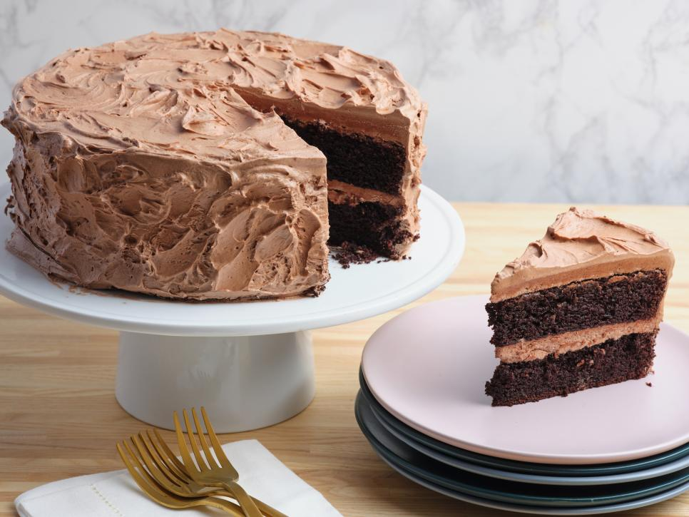

Chocolate cake recipe

This is a recipe I pulled from The Food Network's website.
Ingredients
For the cake
- Butter, for greasing pans
- 1 3/4 cups all-purpose flour, plus more for pans
- 2 cups sugar
- 3/4 cups cocoa powder
- 2 teaspoons baking soda
- 1 teaspoon baking powder
- 1 teaspoon kosher salt
- 1 cup buttermilk, shaken
- 1/2 cup vegetable oil
- 2 extra large eggs at room temperature
- 1 teaspoon pure vanilla extract
- 1 cup freshly brewed hot coffee
For the frosting
- 6 oz semisweet chocolate
- 1/2 lb (2 sticks) unsalted butter at room temperature
- 1 extra large egg yolk at room temperature
- 1 teaspoon pure vanilla extract
- 1 1/4 cups sifted confectioners' sugar
- 1 tablespoon instant coffee powder
Steps
For the cake
- Preheat the oven to 350 degrees F. Butter two 8-inch x 2-inch round cake pans. Line with parchment paper, then butter and flour the pans.
- Sift the flour, sugar, cocoa, baking soda, baking powder, and salt into the bowl of an electric mixer fitted with a paddle attachment and mix on low speed until combined. In another bowl, combine the buttermilk, oil, eggs, and vanilla. With the mixer on low speed, slowly add the wet ingredients to the dry. With mixer still on low, add the coffee and stir just to combine, scraping the bottom of the bowl with a rubber spatula. Pour the batter into the prepared pans and bake for 35 to 40 minutes, until a cake tester comes out clean. Cool in the pans for 30 minutes, then turn them out onto a cooling rack and cool completely.
- Place 1 layer, flat side up, on a flat plate or cake pedestal. With a knife or offset spatula, spread the top with frosting. Place the second layer on top, rounded side up, and spread the frosting evenly on the top and sides of the cake.
For the frosting
- Chop the chocolate and place it in a heat-proof bowl set over a pan of simmering water. Stir until just melted and set aside until cooled to room temperature.
- In the bowl of an electric mixer fitted with a paddle attachment, beat the butter on medium-high speed until light yellow and fluffy, about 3 minutes. Add the egg yolk and vanilla and continue beating for 3 minutes. Turn the mixer to low, gradually add the confectioners' sugar, then beat at medium speed, scraping down the bowl as necessary, until smooth and creamy. Dissolve the coffee powder in 2 teaspoons of the hottest tap water. On low speed, add the chocolate and coffee to the butter mixture and mix until blended. Don't whip! Spread immediately on the cooled cake.